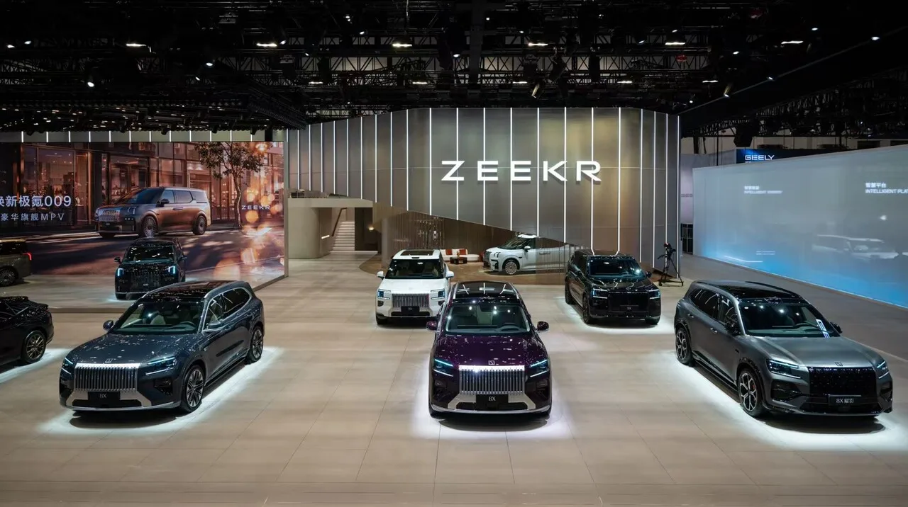

▲ 테슬라 모델 Y. 2026년 7월 글로벌 전기차 판매 1위(7만 7,405대)를 기록했다
전기차 판매 순위표를 위에서부터 읽어 내려가면 낯선 경험을 하게 됩니다. 익숙한 이름이 좀처럼 나오지 않기 때문입니다.
2026년 7월 기준 전기차 판매 톱20 모델 가운데, 100년 가까운 역사를 가진 전통 완성차의 모델은 단 하나였습니다. 토요타 bZ4X, 1만 2,632대입니다.
1. 톱20의 얼굴이 바뀌었다
1위는 여전히 테슬라입니다. 모델 Y가 7만 7,405대로 선두를 지켰습니다.
문제는 2위부터입니다. 2위에서 10위까지를 BYD, 지리, 립모터, 샤오미 등 중국계 업체가 사실상 독식했습니다. 상위권에서 유럽과 일본, 미국의 전통 완성차 이름을 찾기 어렵습니다.

▲ BYD는 브랜드별 판매에서 35만 663대로 1위를 기록했다 ⓒ BYD
전통 완성차의 유일한 진입 모델은 토요타 bZ4X입니다. 1만 2,632대로, 1위 모델 Y의 6분의 1 수준입니다.

▲ 토요타 bZ4X. 19위로 톱20에 진입한 유일한 전통 완성차 모델이다 ⓒ 토요타
| 순위 | 모델 | 제조사 |
|---|---|---|
| 1 | 모델 Y | 테슬라 (전년 대비 -9%) |
| 2 | 송(Song) | BYD |
| 3 | 싱위안 | 지리 |
| 4 | 위안 UP | BYD |
| 5 | 시걸 | BYD |
| 6 | A10 | 립모터 |
| 7 | 돌핀 | BYD |
| 8 | SU7 | 샤오미 |
| 9 | 타이 7 | 팡청바오(BYD) |
| 19 | bZ4X | 토요타 — 유일한 전통 OEM |
테슬라도 마냥 안전하지는 않습니다. 1위 모델 Y는 전년 대비 9% 감소했고, 모델 3은 1만 9,000대 수준으로 44% 급감하며 11위로 밀렸습니다. 상위권을 지키고 있을 뿐 증가세는 아닙니다.
2. 브랜드별로 봐도 결과는 같다
모델 단위가 아니라 브랜드 단위로 집계해도 그림이 바뀌지 않습니다.
| 순위 | 브랜드 | 판매량 |
|---|---|---|
| 1 | BYD | 35만 663대 |
| 2 | 지리 | 10만 7,797대 |
| 3 | 립모터 | 10만 1,267대 |
| 4 | 테슬라 | 9만 8,772대 |
| — | 폭스바겐 | 5만 505대 |
| — | 토요타 | 5만 415대 |
| — | 기아 | 4만 4,867대 |
| — | 현대차 | 2만 8,634대 |
BYD 한 곳이 폭스바겐·토요타·기아·현대차를 모두 합친 것보다 많이 팔았습니다. 네 브랜드 합계가 17만 4,421대인데 BYD는 35만 663대입니다.

▲ 샤오미. 스마트폰 기업이 전기차 상위권에 진입했다 ⓒ 샤오미
현대차와 기아의 순서도 눈에 띕니다. 기아가 4만 4,867대로 현대차(2만 8,634대)보다 많습니다.
3. 11년 된 회사가 현대·기아와 동률
가장 무거운 숫자는 누적 점유율에 있습니다. 올해 1월부터 7월까지 누적으로 보면 BYD가 19.8%로 압도적 선두이고, 지리가 9.9%로 2위, 테슬라가 8.3%로 3위입니다.
그리고 립모터입니다. 창립 11년에 불과한 이 신생 업체가 4.1%를 기록하며 현대차·기아 합산과 동률을 이뤘습니다. 글로벌 6위 OEM 자리입니다.

▲ 립모터 C10. 7월 톱20에서 17위를 기록했다 ⓒ 립모터
모델 단위로 보면 더 선명합니다. 립모터는 7월 톱20에 세 개 모델을 올렸습니다. A10이 6위, C10이 17위, 새로 진입한 B10이 20위입니다. 브랜드 하나가 상위 20위 안에 세 자리를 차지한 것입니다.

▲ 립모터 B10. 이번에 20위로 처음 톱20에 진입했다 ⓒ 립모터
같은 표에서 토요타 RAV4 PHEV는 1만 2,236대로 톱20 진입에 200대도 못 미치게 실패했습니다. 신형으로 바뀌며 기록을 세운 수치인데도 그렇습니다. 전통 완성차가 잘해도 겨우 경계선에 걸린다는 뜻입니다.

▲ 지커를 포함한 중국 브랜드들이 제품 전개 속도를 무기로 삼고 있다 ⓒ 지커
📍 100년과 11년의 비교가 성립하는 이유
전통 완성차의 강점은 축적입니다. 엔진 기술, 생산 노하우, 딜러망, 브랜드 신뢰가 수십 년에 걸쳐 쌓였습니다.
그런데 전기차에서는 이 축적의 상당 부분이 이월되지 않습니다. 엔진 기술은 쓸 곳이 없고, 배터리와 소프트웨어는 새로 시작하는 영역입니다. 11년 된 회사와 100년 된 회사가 같은 출발선에 서는 구간이 생긴 것입니다.
4. "내수 덕분"이라는 설명은 틀렸다
중국 브랜드의 성장을 자국 시장 규모로 설명하는 시각이 있습니다. 이 통계는 그 설명을 정면으로 반박합니다.
7월 순수전기차 판매는 전년 대비 16% 늘었습니다. 그런데 중국과 미국을 제외한 시장에서는 전체 플러그인이 50%, 순수전기차만 보면 61% 증가했습니다. 성장의 무게중심이 오히려 제3시장에 있다는 뜻입니다.
점유율 구조도 함께 봐야 합니다. 7월 27%는 플러그인 하이브리드를 포함한 수치이고, 순수전기차만으로는 19%입니다. 1~7월 누적으로는 BEV 17% + PHEV 7%로 24%입니다.

▲ 중국 업체들은 차량과 충전 인프라를 함께 밀고 있다 ⓒ 지리자동차
저가 공세라는 설명도 부분적입니다. BYD와 지리뿐 아니라 립모터, 샤오미, 샤오펑, 지커 등 여러 업체가 가격 경쟁력과 빠른 제품 전개를 동시에 앞세워 글로벌 시장으로 영역을 넓히고 있습니다.
5. 바뀐 것은 판매량이 아니라 규칙이다
전통 완성차가 맞닥뜨린 위기의 본질은 판매 대수가 아닙니다. 경쟁의 규칙이 바뀌었는데 과거의 성공 방정식에서 얼마나 빨리 벗어날 수 있느냐의 문제입니다.
수십조 원의 투자 계획과 거창한 전동화 로드맵만으로는 부족합니다. 소비자가 실제로 선택할 수 있는 가격과 상품성을 갖춘 전기차를 얼마나 빠르고 효율적으로 내놓느냐가 승부를 가릅니다.

▲ 누가 더 좋은 차를 만드느냐보다, 누가 더 빨리 소비자가 원하는 방식으로 바뀌느냐의 경쟁이다 ⓒ BYD
국내 완성차에도 그대로 적용되는 진단입니다. 현대차·기아 합산 점유율이 11년 된 립모터 한 곳과 같다는 수치는, 브랜드 인지도나 품질 평가와는 다른 축에서 벌어지는 일입니다.
정리하면 이렇습니다. 100년이 만든 가치는 분명히 있습니다. 다만 전기차 시대의 경쟁력은 과거의 유산이 아니라, 새로운 경쟁 방정식을 누가 더 빠르게 받아들이느냐에 달려 있습니다. 7월 톱20은 그 결과를 먼저 보여준 표입니다.